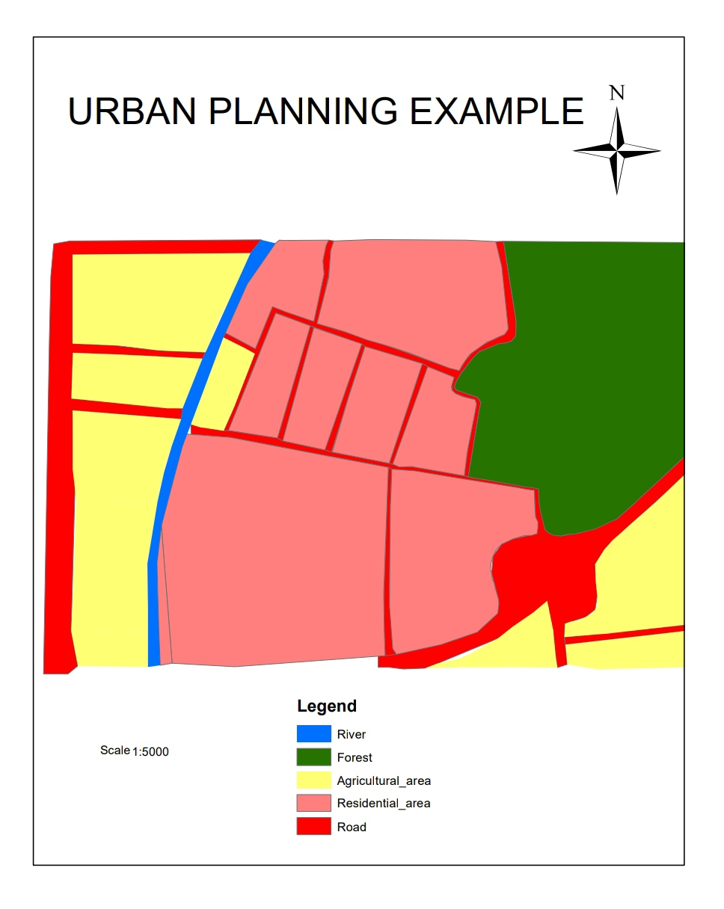

Dive into the future of urban living, from smart cities to green buildings and more.
Sustainability in urban planning is critical to addressing global challenges such as climate change, rapid population growth, and resource scarcity. By adopting sustainable practices, cities can reduce their carbon footprints, improve quality of life, and ensure equitable access to resources for all.
Key challenges and successes of sustainable urbanization (SDG 11).
Explore the core concepts of sustainable cities through interactive modules and case studies.
Exploring sustainable transportation solutions, from public transport to cycling infrastructure.
How eco-friendly construction methods help reduce carbon footprints.
Understanding circular economies, recycling, and waste reduction practices.
The importance of parks, community spaces, and green infrastructure in cities.
How technology and data help make cities more sustainable and efficient.
Create your first GIS Mapping
Before: from google pro earth, satellite imaging
after using gis
Discover how cities around the world are leading the way in sustainable urban planning.
Copenhagen is a global leader in green mobility, promoting cycling, public transport, and carbon-neutral initiatives to create a sustainable urban environment.
Test your knowledge and apply your skills to real-world urban challenges.
Answer questions to assess your understanding of sustainable city concepts.
Face a real-world urban challenge and propose a solution using your knowledge.
Explore curated content, data, and tools to learn more about sustainable cities.
Join the conversation and collaborate with like-minded learners.
Share your ideas, ask questions, and discuss sustainable city practices with others.
Contribute your ideas or designs for a sustainable city. Submit and vote on solutions.